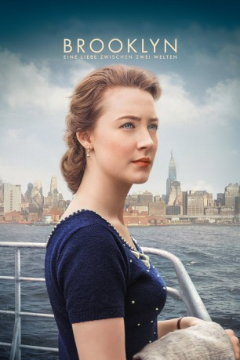
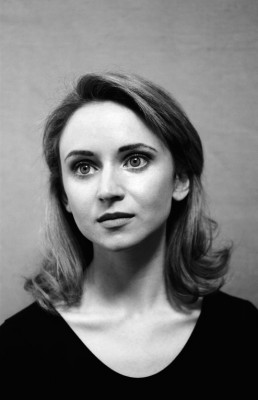

#5555 Brooklyn - Eine Liebe zwischen zwei Welten
Alternativ: Brooklyn
Auszeichnungen: für 3 Oscars nominiert 1 BAFTA-Awards gewonnen
 
 IMDB-Wertung: 7.5 / 10
IMDB-Wertung: 7.5 / 10  Metascore: 0
Metascore: 0 
Der Film erzählt die bewegende Geschichte der jungen Eilis Lacey, einer jungen irischen Immigrantin, die in den 1950er Jahren versucht, in Brooklyn Fuß zu fassen. Von den Versprechungen Amerikas angelockt, verlässt Eilis nicht nur Irland, sondern auch das behagliche Heim ihrer Mutter, um in New York ein neues Leben zu beginnen. Anfangs leidet die junge Frau unter großem Heimweh, doch das verfliegt schnell als sie sich von einer Liebesromanze mitreißen lässt. Aber schon bald wird ihr neues Leben auf eine harte Probe gestellt und sie muss sich nicht nur zwischen zwei Ländern, sondern auch zwischen zwei ganz unterschiedlichen Lebensentwürfen entscheiden.
Jahr: 2015
Dauer: 111 Minuten
FSK: 0
Land: England Studio: 20th Century Fox of GermanyTonspuren: DTS - ,
Untertitel: Deutsch,
Auflösung: 1080p (1920x1036) Größe: 7628 MB
Genre: Drama, Liebe
Regisseur: John Crowley
Drehbuch: Nathan Anderson
Soundtrack:
Darsteller:
 Saoirse Ronan als Eilis
Saoirse Ronan als Eilis- Hugh Gormley als Priest
- Maeve McGrath als Mary
- Barbara Drennan als Shabby Woman
- Gillian McCarthy als Timid Woman
 Fiona Glascott als Rose Lacey
Fiona Glascott als Rose Lacey- Eileen O'Higgins als Nancy
- Eva Birthistle als Georgina
 Julie Walters als Mrs Kehoe
Julie Walters als Mrs Kehoe Emily Bett Rickards als Patty
Emily Bett Rickards als Patty- Eve Macklin als Diana
 Nora-Jane Noone als Sheila
Nora-Jane Noone als Sheila- Mary O'Driscoll als Miss McAdam
- Samantha Munro als Dorothy
 Jessica Paré als Miss Fortini
Jessica Paré als Miss Fortini Jim Broadbent als Father Flood
Jim Broadbent als Father Flood- Alain Goulem als Mr Rosenblum
- Max Walker als Young Man
-  Jenn Murray als Dolores
 Emory Cohen als Tony
Emory Cohen als Tony- Erika Rosenbaum als Bartocci Customer #2
- Christian de la Cortina als Laurenzio
 Paulino Nunes als Mr Fiorello
Paulino Nunes als Mr Fiorello- James DiGiacomo als Frankie Fiorello
 Michael Zegen als Maurizio
Michael Zegen als Maurizio- Tadhg McMahon als Boy's Father
- Hudson Leblanc als Boy at City Hall
 Domhnall Gleeson als Jim Farrell
Domhnall Gleeson als Jim Farrell Karen Belfo als Lady at the Cinema , uncredited
Karen Belfo als Lady at the Cinema , uncredited- Brid Brennan als Miss Kelly
- Emma Lowe als Mrs Brady
- Jane Brennan als Mary Lacey
- Peter Campion als George Sheridan
- James Corscadden als Ship Waiter
- Jane Wheeler als Bartocci Customer #1
- Adrien Benn als Diner Waiter
- Iarla O'Lionaird als Frankie Doran
- Ellis Rockburn als Young Man at Dance
 Ellen David als Mrs Fiorello
Ellen David als Mrs Fiorello- Paul Stewart als City Hall Official
- Niamh McCann als Maria
- Denis Conway als Mr Brown
- Karen Ardiff als Mrs Farrell
- Gary Lydon als Mr Farrell
- Aine Ni Mhuiri als Mrs Byrne
- Mella Carron als Girl on Deck
- Chantal Parent als Extra , uncredited
Datei: X:\2015(A-F)\Brooklyn - Eine Liebe zwischen zwei Welten (2015, FSK0, 1920x1036).mkv seit 17.02.2017
Festplatte: HD 2015(A-Z)
 Es gibt insgesamt 143 Filme in der Gruppe '2015(A-F)'
Es gibt insgesamt 143 Filme in der Gruppe '2015(A-F)'